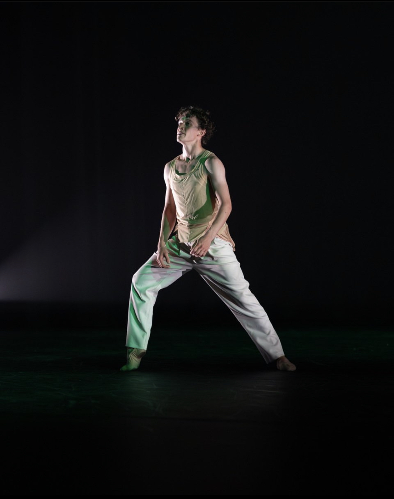

Welcome
My name is Zane Winders
I am an honors student studying cybersecurity at Purdue University Northwest.

My journey to cybersecurity has been anything but conventional. I began as a professional ballet
dancer and teacher, through which I developed discipline, precision, and collaboration—qualities
that now shape my approach to technology. Returning to the classroom, I found that the focus and
adaptability honored in the arts are just as essential in defending digital assets. At Purdue University
Northwest, I am pursuing a Bachelor of Science in Cybersecurity and Minor in Organizational Leadership as
an honors student. I am driven by a passion for problem-solving and a commitment to protecting information
in an increasingly connected world.